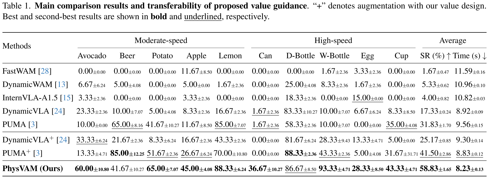
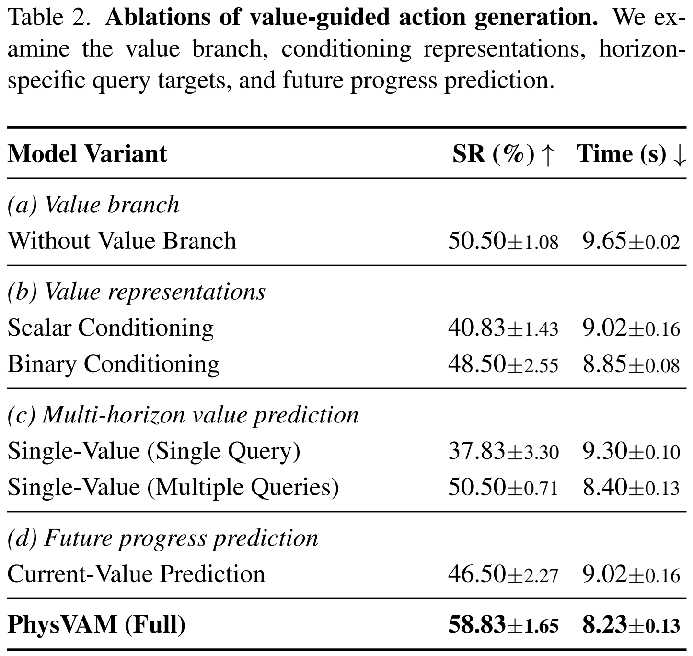
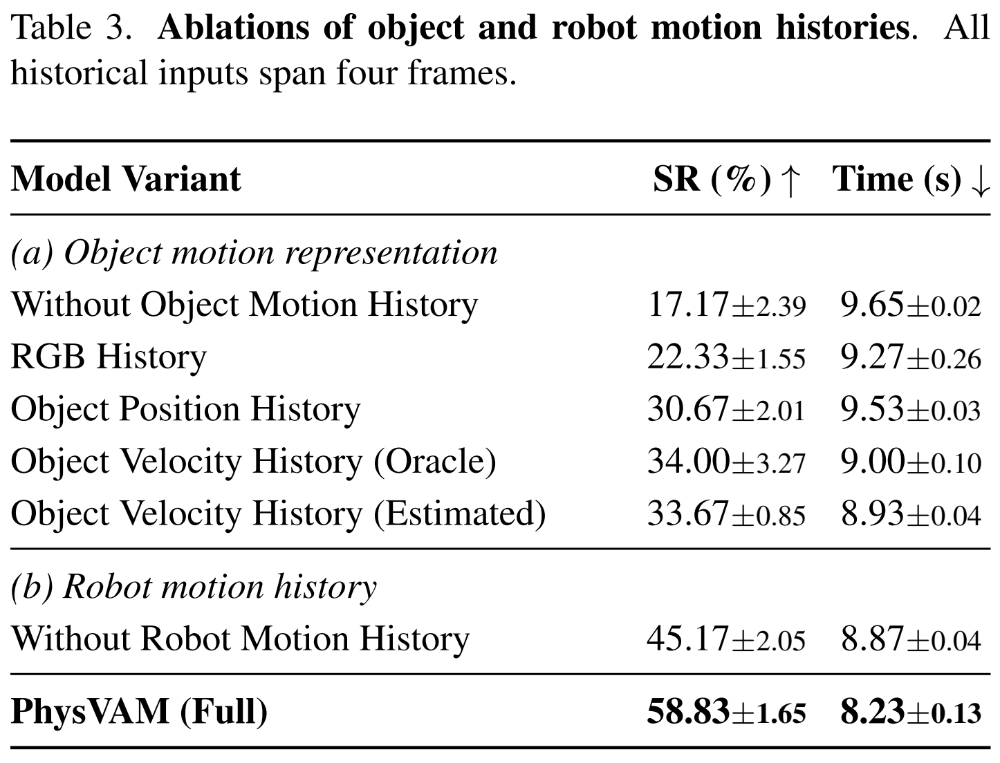

Simulation

Dynamic object manipulation
 PhysVAMPhysics-oriented Future Value Action Model
PhysVAMPhysics-oriented Future Value Action ModelAnticipate task progress. Guide dynamic actions.
Simulation success
+27.00 pp over PUMAReal-world success
+27.50 pp over PUMAFuture task values
h = 4, 8, 16, 32 stepsSimulation: paper Table 1. Real world: macro-average over three scenarios, paper Table 8.
Predicting future scene or object states does not necessarily reveal how robot–object interactions will advance or hinder a task. This challenge is particularly pronounced in dynamic robotic manipulation, where objects continue moving during perception and execution. Effective action generation therefore requires not only modeling object dynamics but also anticipating how future interactions will shape task progress. To this end, we propose PhysVAM, a Physics-oriented Future Value Action Model that represents anticipated interactions through their effects on future task progress. This value-based formulation provides task-directed foresight without reconstructing future visual states. Conditioned on current observations and historical object and robot motion, PhysVAM jointly learns action generation and multi-horizon future-value prediction. The value branch learns horizon-specific latent representations through future task-value prediction from successful and failed trajectories. These future-value representations are integrated into the action policy through gated cross-attention, guiding action generation toward interactions that facilitate task success. Extensive simulation and real-world experiments demonstrate superior task success, with absolute success-rate improvements of 27.0 and 27.5 percentage points over the strongest baselines in simulation and real-world tasks, respectively.
The idea
Guide action generation toward interactions that facilitate task success.
Moving objects can turn a promising grasp into a missed interaction. PhysVAM predicts how future robot–object interactions will advance or hinder task progress, using current observations and object and robot motion histories. The resulting multi-horizon value representations provide task-directed guidance for action generation, helping the policy choose interactions that move the task toward success.

Method
Historical motion provides context. Future values provide task-directed guidance.

Object positions and estimated velocities condition ActionDiT. Recent robot actions provide temporal context to ValueDiT.
Horizon-specific queries learn future task-value representations at 4, 8, 16, and 32 steps.
Gated cross-attention injects latent value features into the action branch to generate a 32-step action chunk.
See the predictions
Follow predicted task progress as interactions unfold.
Across 220 grasp attempts, the mean predicted value change at h = 4 is +0.254 for lifts and −0.185 for misses.
Evaluation
Simulation, real-world results, and ablations from the paper.

| Method | Conveyor | Turntable | Rolling | Average |
|---|---|---|---|---|
| DynamicVLA | 40.0 | 22.5 | 25.0 | 29.17 |
| PUMA | 47.5 | 32.5 | 30.0 | 36.67 |
| PhysVAM | 72.5 | 65.0 | 55.0 | 64.17 |


Real-world comparisons
Prompt: Transfer the moving cube into the basket.
Prompt: Put the moving orange in the basket.
Prompt: Move the moving cup into the open-top box.
Prompt: Place the moving bread on the plate.
Prompt: Pick up the rolling white bottle and place it in the basket.